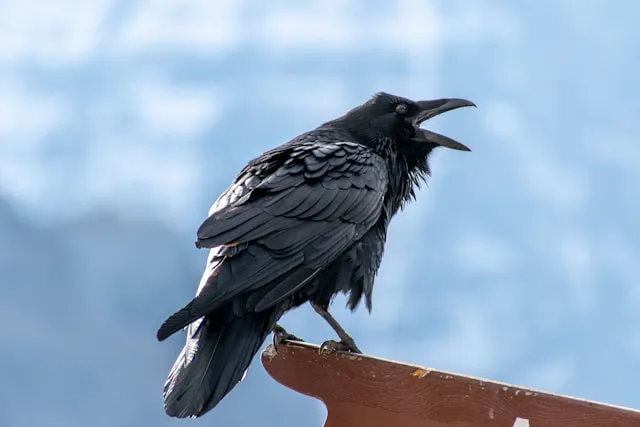

The platypus, sometimes referred to as the duck-billed platypus, is a semiaquatic, egg-laying mammal endemic to eastern Australia, including Tasmania. The platypus is the sole living representative of its family Ornithorhynchidae and genus Ornithorhynchus, though a number of related species appear in the fossil record. Together with the four species of echidna, it is one of the five extant species of monotremes, mammals that lay eggs instead of giving birth to live young. Like other monotremes, the platypus has a sense of electrolocation, which it uses to detect prey in water while its eyes, ears and nostrils are closed. It is one of the few species of venomous mammals, as the male platypus has a spur on each hind foot that delivers an extremely painful venom.
Platypus
Raven
A raven is any of several large-bodied passerine bird species in the genus Corvus. These species do not form a single taxonomic group within the genus. There is no consistent distinction between crows and ravens; the two names are assigned to different species mainly by size.
The largest species are the common raven and the thick-billed raven; these are also the largest passerine species.
